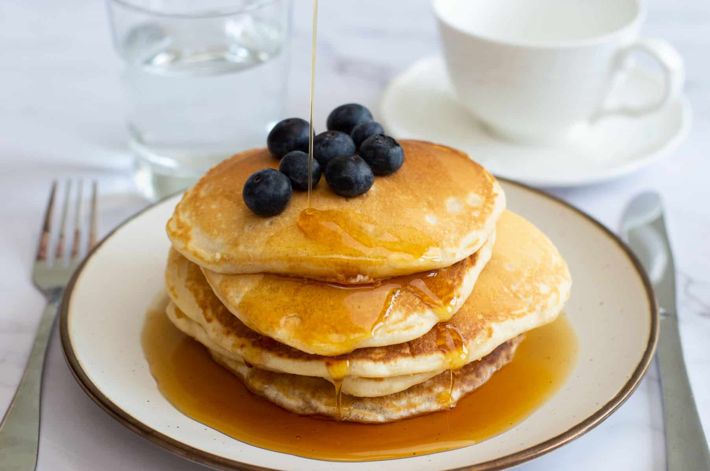

American Pancakes

Description
Easy, American-style, fluffy pancakes are great for feeding a crowd at breakfast or brunch. Top with something sweet like fruit, jam or syrup, or even rashers of crispy bacon.
Ingredients
- 200 g Flour
- 10 g Baking Powder
- 1 tbsp Sugar
- 1 tsp Salt
- 300 ml Milk
- 1 Egg
Steps
- Sift flour into a large mixing bowl,
add baking powder, sugar & salt. Mix and make a well.
- Add milk, butter and 1 egg. Gently whisk all the
ingredients together until you have a slightly thick consistency.
- Preheat a frying pan or griddle over medium heat. Pour a small ladle of batter onto
the pan (you can add multiple ladles if there is space).
- Cook until the batter has thickened and small bubbles begin to show, this will take about one minute.
Flip and continue to cook for 30 seconds, until the underside has browned.
- Serve with your maple syrup and blueberries.
Go back to Home Page